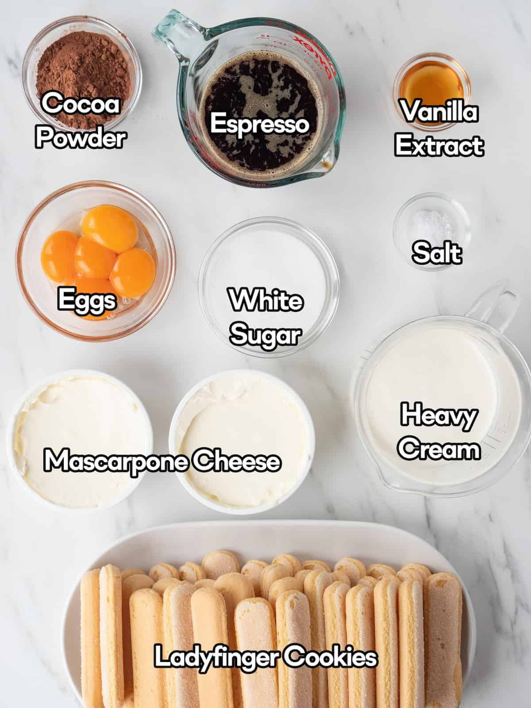
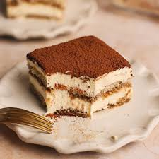

TIRAMISU

Soaking Liquid
1 1/2 cups strong espresso
2 tbsp rum or amaretto(OPTIONAL)
Cream Filling
1 cup heavy whipping cream
Assembly

Prep coffee drip
Mix the espresso and alcohol in a shallow bowl. Set aside to cool.
Whisk the yolks
Whisk egg yolks and sugar in a bowl over simmering water (double boiler). Whisk constantly for 5 minutes until pale and thick. Remove from heat to cool.
Build the cream
Fold the mascarpone into the cooled egg mixture until smooth. In a separate bowl, whip the heavy cream and vanilla to stiff peaks. Gently fold the whipped cream into the mascarpone mix until fluffy.
Soak and layer
Dip ladyfingers into espresso for 1 to 2 seconds per side (don't let them get mushy). Lay them in a single layer at the bottom of an 8x8 inch dish. Spread half of the mascarpone cream over the ladyfingers.
repeat and dust
Add a second layer of soaked ladyfingers and the rest of the cream. Sift cocoa powder generously over the top.
Chill
Refrigerate for at least 6 hours. This is mandatory for the structure to hold!